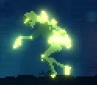
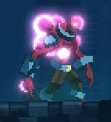
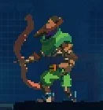
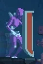
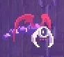
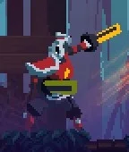

【 Başlıca Düşmanlar 】
|

Zombiler, karşılaştığınız ilk düşmanlardır. |

Bombacılar, size pembe bir bomba fırlatır. |

Okçular, size basit bir şekilde ok fırlatır. |
|---|---|---|
|

Kalkancılar, önden hasar almazlar. Arkalarına geçmeyi deneyin! |

Yarasalar, karşılaştığınız ilk uçan düşmanlardır. |

Phaser, aynı zombiler gibidir ama Phaser ışınlanabilir! |